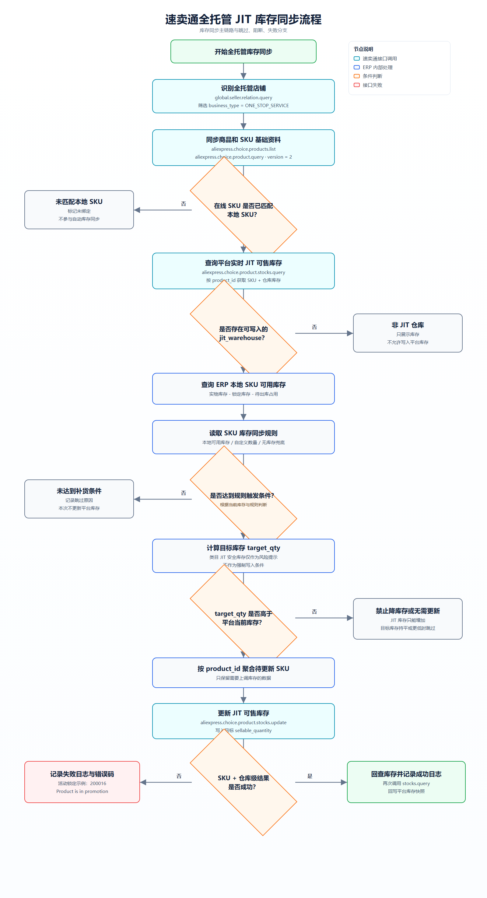

速卖通全托管商品管理与 JIT 库存同步 PRD
版本：V1.0 · 产品范围：全托管商品只读管理 + JIT 库存同步规则配置 · 更新日期：2026-06-05
1. 项目背景
自研 ERP 需要统一拉取并展示速卖通全托管店铺的商品、SKU、审核、供货价、平台库存、本地库存和货品绑定信息。同时，本期接入 JIT 库存同步能力，允许用户按 SKU 设置库存补货规则，由后台任务计算目标库存并更新平台。
核心边界：商品标题、价格、上下架、审核信息等仅拉取展示；本期唯一允许配置的业务能力为库存同步规则。
2. 产品目标与范围
| 类型 | 内容 |
|---|
| 目标 | 完整展示全托管商品与 SKU 信息；支持筛选、状态切换、详情、日志和原始 JSON；支持配置 JIT 库存同步规则。 |
| 本期范围 | 全托管店铺识别、商品列表与详情同步、SKU 与本地 SKU 关系展示、平台与本地库存对照、库存同步规则配置、后台库存同步、同步日志。 |
| 不在本期 | 商品发布、编辑标题、调价、上下架、修改审核状态、编辑货品绑定、非 JIT 仓库库存更新。 |
3. 用户与使用场景
| 角色 | 核心场景 | 权限 |
|---|
| 运营 | 查看商品状态、审核原因、SKU、库存与最近变化；筛选并配置库存规则。 | 查看、筛选、导出、配置库存同步规则。 |
| 系统任务 | 定时拉取商品与库存，执行已启用的库存规则。 | 调用平台查询与库存更新接口，记录日志。 |
| 研发 / 支持 | 查看原始 JSON、接口错误和同步日志。 | 只读排查。 |
4. 页面结构
- 页面标题区：展示页面名称和只读业务说明。
- 筛选区：两行四等分栅格，所有筛选控件宽度一致。
- 状态 Tab：全部、销售中、审核中、审核不通过、已下架。
- 商品列表：每页 10 条，支持勾选 listing、导出和配置库存同步规则。
- SKU 展开行：展示在线 SKU、本地 SKU、库存对照、销售状态、供货价和货品绑定。
- 详情 / 日志 / JSON 抽屉：查看完整数据与历史变化。
- 库存同步规则弹窗：顶部筛选，支持批量修改和逐条修改。
5. 筛选与排序
| 筛选项 | 控件 | 枚举 / 规则 |
|---|
| 商品关键词 | 类型下拉 + 输入框 | 商品 ID、商品标题、SKU 编码。 |
| 货品关键词 | 类型下拉 + 输入框 | 货品 ID、货品条码、SKU 编码。 |
| 全托管店铺 | 下拉 | 展示 SMT01全托管 等 ERP 店铺名称，并展示运营负责人。 |
| 类目 | 下拉 | 按类目名称筛选，不展示类目 ID。 |
| 备货类型 | 下拉 | JIT 即时补货、仓发、国内履约、海外仓。 |
| 库存状态 | 下拉 | 有库存、库存为 0、部分 SKU 售罄、库存异常。 |
| 货品绑定 | 下拉 | 全部已绑定、部分绑定中、未绑定、解绑拒绝。 |
| 排序 | 下拉 | 创建时间倒序、创建时间正序、30 天销量从大到小、30 天销量从小到大。 |
6. 商品列表字段
| 字段 | 展示规则 |
|---|
| 商品 | 主图、标题、商品 ID、一键复制、类目名称、SKU 数量。标题和类目超长时单行省略，悬浮展示完整文本。 |
| 店铺 | 店铺名称与运营负责人独立展示，不与商品或 SKU 混排。 |
| 备货类型 | 展示 JIT 即时补货、仓发等类型。 |
| 审核状态 | 销售中 下方展示“处于正常销售状态”；审核中 展示“等待平台审核中”；审核不通过 展示中文具体原因。 |
| 供货价 | 单 SKU 显示单价；多 SKU 价格不同时显示最低价至最高价区间。下方展示 ERP 系统采购价。 |
| 库存 | 并排展示平台在售库存与本地可用库存。 |
| 近 30 天销量 | 展示销量及环比变化。 |
| 货品绑定 | 展示 listing 下 SKU 绑定汇总。 |
| 最近变化 | 展示最近一次字段变化摘要和时间。 |
| 操作 | 详情、日志、JSON。除库存同步规则外，不提供编辑入口。 |
7. SKU 明细
一个 listing 可以包含多个 SKU。列表默认展开异常 SKU 与前若干 SKU，完整 SKU 通过抽屉查看。
| 字段 | 要求 |
|---|
| SKU 关系 | 必须展示 SKU 名称、在线 SKU、本地 SKU、SKU 编码、货品条码、货品 ID。 |
| 规格 | 展示颜色、尺寸等变体属性。 |
| 销售状态 | 销售中、停售等。 |
| 供货价 | 展示该 SKU 的平台供货价。 |
| 库存对照 | 平台在售库存与本地仓库可用库存并排展示。 |
| 货品绑定 | 展示绑定中、已绑定、未绑定、解绑拒绝及中文说明。 |
8. 库存同步规则弹窗
8.1 进入方式
- 用户在商品列表勾选一个或多个 listing。
- 点击列表右上角“库存同步规则”。
- 弹窗展开所选 listing 下的 SKU。
8.2 弹窗筛选
| 筛选项 | 枚举 |
|---|
| 是否有映射关系 | 全部、已映射、未映射。 |
| 库存同步状态 | 全部、开启、关闭。 |
| 补货方式 | 全部、本地可用库存、自定义数量、无库存兜底。 |
8.3 批量修改与单独修改
- 每条 SKU 数据支持勾选，表头支持全选和半选状态。
- 顶部“批量修改”仅应用于弹窗内已勾选的 SKU；未选择时按钮禁用。
- 表格中的“补货方式、补货逻辑”支持每条 SKU 单独修改。
- 批量应用后，用户仍可继续单独调整某条 SKU。
9. 库存同步规则
| 补货方式 | 触发与计算逻辑 | 风险 |
|---|
| 本地可用库存 | target_qty = local_available_qty。本地仓库 SKU 有多少可用库存，就向平台设置多少目标库存。 | 目标库存低于平台当前库存时不得写入。 |
| 自定义数量 | 平台在线库存低于阈值时，补到自定义数量；支持“自定义数量”和“可售库存与自定义数量取最小值”。 | 需确保目标库存高于平台当前库存。 |
| 无库存兜底 | 平台库存低于阈值且系统无可用库存时，补到配置的兜底数量。 | 可能产生本地无货但平台可售，必须明确提示并记录日志。 |
JIT 约束：平台 JIT 库存更新只能增加，不能减少。目标库存小于或等于当前平台库存时，不调用更新接口。
活动 SKU 约束：SKU 参加活动时，不允许将目标库存设置为低于当前在售库存。平台可能返回错误码 200016：Product is in promotion. Stock could not be reduced。
10. 接口对接
| 接口 | 名称 / 用途 | 调用时机 |
|---|
global.seller.relation.query | 获取商家账号列表，筛选 ONE_STOP_SERVICE 店铺。 | 店铺关系同步。 |
aliexpress.choice.products.list | 商品列表查询，固定传 version=2。 | 按店铺分页同步。 |
aliexpress.choice.product.query | 查询单个商品详情，补齐 SKU、货品、仓库等。 | 商品详情同步。 |
aliexpress.choice.product.stocks.query | 查询商品当前 JIT SKU 仓库可售库存。 | 写入前查询与写入后回查。 |
aliexpress.choice.product.stocks.update | 更新 JIT SKU 仓库目标库存。 | 按 product_id 聚合需要上调库存的 SKU 后调用。 |
aliexpress.choice.product.jit.stock.rule.query | 查询类目 JIT 最小安全库存阈值。 | 类目首次同步或变化时调用，仅作为风险提示。 |
不使用：aliexpress.postproduct.redefining.editmutilpleskustocks 属于 POP 商品库存接口，不作为全托管 JIT 库存写入主链路。
11. 后台库存同步流程
- 读取已启用的 SKU 库存同步规则。
- 调用
stocks.query 查询平台实时库存，不能使用列表缓存直接写入。
- 查询 ERP 本地 SKU 可用库存。
- 根据补货规则计算
target_qty。
- 校验本地 SKU 映射、
jit_warehouse、规则触发条件、禁止降库存和活动 SKU 限制。
- 按
product_id 聚合需要上调库存的 SKU，调用 stocks.update。
- 解析 SKU + 仓库级结果，不能只判断顶层 success。
- 成功后再次调用
stocks.query 回查，并记录库存快照与日志。

12. 日志要求
| 字段 | 说明 |
|---|
| 标识 | task_id、product_id、sku_id、local_sku、warehouse_code。 |
| 库存快照 | current_online_qty、local_available_qty、target_qty。 |
| 规则 | rule_type、threshold_qty、replenish_qty、fallback_qty。 |
| 接口数据 | request_payload、response_payload、error_code、error_message。 |
| 结果 | 成功、失败、跳过、活动锁定、未达到补货条件、禁止降库存。 |
| 审计 | operator / task_id、created_at。 |
13. 验收标准
- 仅同步并展示
business_type = ONE_STOP_SERVICE 的全托管店铺。
- 商品列表支持状态切换、筛选、排序和每页 10 条分页。
- 列表字段、SKU 明细字段和弹窗字段按原型展示，长文本不破坏布局。
- 审核不通过展示中文具体原因。
- 库存同步弹窗支持 SKU 逐条勾选、全选、批量修改和单独修改。
- 批量规则只应用于已勾选 SKU。
- 非
jit_warehouse、未映射本地 SKU、目标库存不高于当前库存时不调用更新接口。
- 库存更新按 SKU + 仓库级解析结果，并在写入后回查。
- 每条 listing / SKU 的同步变化和错误均可在日志中追溯。